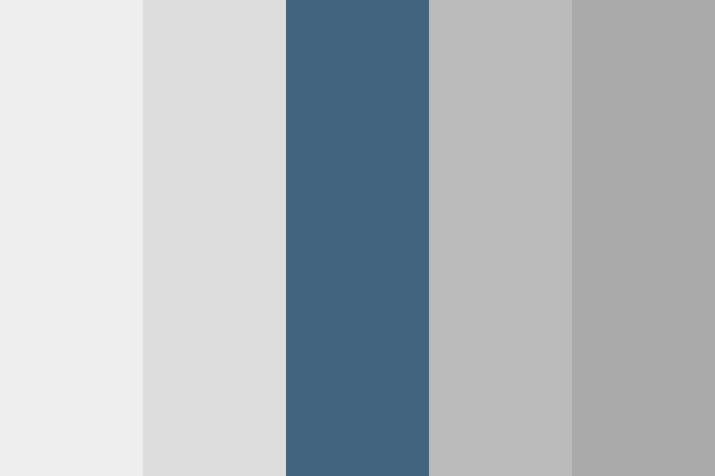

Aanleiding
Wij zijn studenten aan het Stanislascollege Westplantsoen voor voortgezet onderwijs in Delft. Deze website is het product van een praktische opdracht die wij moesten maken voor het vak informatica. Het was heel leuk om deze website in elkaar te zetten en om te leren over digitale veiligheid. Daarnaast was het interessant om te werken volgens een stappenplan die websiteontwikkelaars ook werkelijk gebruiken.
Ontwerp van de website
Voordat deze website werd gebouwd, hebben we een ontwerp moeten maken. Bovendien is het ontwerp deels verandert tijdens de ontwikkeling. Daarom hebben wij foto's van de veranderingen waardoor de website heen ging; van ontwerp tot eindversie.


Sitemap
In principe is de sitemap hetzelfde gebleven als in de ontwerpfase, maar hebben we nu een simulatie toegevoegd in plaats van een geheime knop. De sitemap ziet er als volgt uit:
Kleurenstaal
Tijdens de ontwerpfase hadden we een kleurenstaal van 5 kleuren bedacht, maar de kleurenpalette is uiteindelijk uitgebreid naar 9 verschillende kleuren.

Kleurenstaal v1
Schematische tekeningen
Tijdens de ontwerpfase hebben we schematische tekeningen gemaakt van het ontwerp dat we toen hadden. Gedurende de ontwikkeling zijn meerdere dingen veranderd en reflecteren de tekeningen niet meer volledig de website.
Functies van de website
Om het nakijken van onze docent makkelijker te maken, hebben we een korte lijst met de belangrijkste functies van de website en de technieken die wij hebben gebruikt.
Functies
- Homepagina
- Samenvatting Fundament Security
- Begrippen Fundament Security
- Responsive design (@media)
- Simulatie als extraatje (@keyframes)
- Tabellen, lijsten en afbeeldingen
- Flexbox voor layout
- Links naar paragrafen met een vloeiende beweging